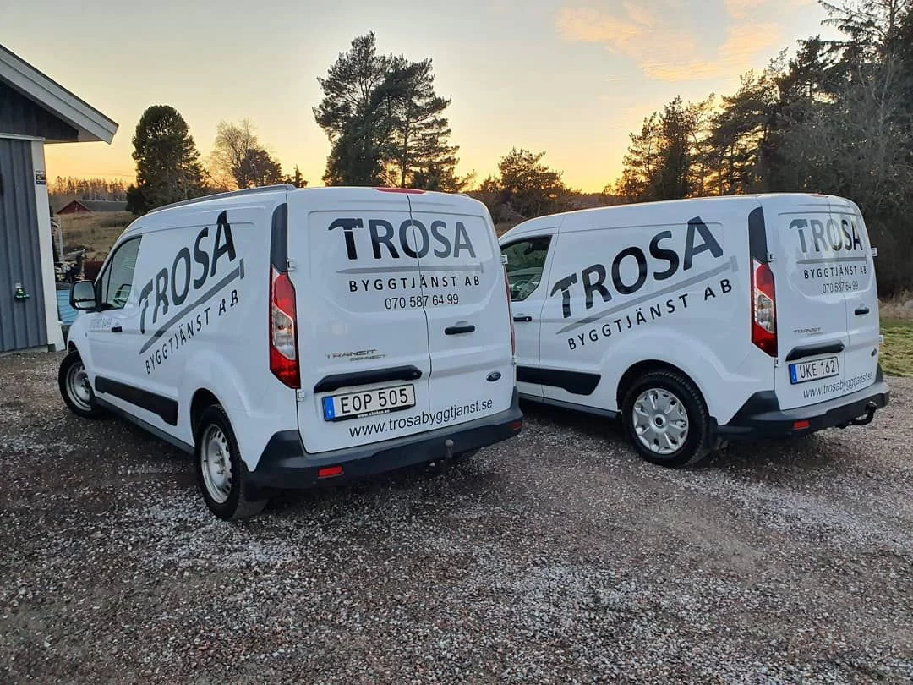

Vi börjar med
ditt projekt.
Vad vill du bygga, förändra eller förbättra?
Hör av dig till Tobias.
Prata med oss.
070 587 64 99info@trosabyggtjanst.seTrosa Byggtjänst ABAlby äng 10
619 73 VagnhäradHitta adressen på kartan

Berätta lite mer.
Formuläret öppnar ett mejlutkast. Du granskar och skickar det själv i ditt e-postprogram.
Innan vi hörs.
Tar ni även mindre arbeten?
Ja. Vi arbetar med allt från mindre renoveringar och specialanpassningar till större ny-, till- och ombyggnationer. Beskriv vad du behöver hjälp med.
Var arbetar ni?
Vi utgår från Trosa kommun, med adress i Vagnhärad. Vi tar även uppdrag på andra platser. Hör av dig och berätta var ditt projekt finns.
Kan ni hjälpa företag också?
Vi arbetar främst med privatkunder, men välkomnar även företag som vill anlita oss.
Vad behöver jag ha klart inför en förfrågan?
Börja med en beskrivning av din idé och platsen. Bilder, mått och eventuella ritningar hjälper oss att förstå uppdraget. Du kan bifoga dem i ditt mejl.